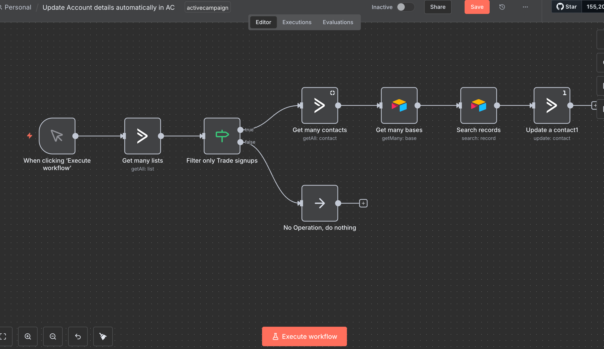

← Back to Projects
← Back to Projects
ActiveCampaign Account Auto-Update System

Problem
- Manual data entry between Airtable and ActiveCampaign is time-consuming
- Contact information gets outdated quickly
- Risk of human error when copying data between systems
- No way to automatically filter and update specific contact segments
Solution
Created an automated sync workflow that monitors ActiveCampaign lists, filters for specific signup types (trade signups), pulls matching records from Airtable, and updates ActiveCampaign contact fields automatically. The system ensures data consistency across both platforms.
Benefits
- Zero manual data entry required
- Real-time contact updates (vs. daily/weekly manual syncs)
- Reduced data errors from manual copying
- Automatic filtering for specific contact segments
- Saves ~3-5 hours per week on data management
How It Works
-
1
Manual trigger starts the workflow
On-demand execution for controlled data synchronization.
-
2
Fetches all lists from ActiveCampaign
Retrieves complete list of contact lists from ActiveCampaign account.
-
3
Filters for "approved-trade-specifiers" list
Identifies specific target list for trade signup contacts only.
-
4
Retrieves all contacts from filtered list
Gets complete contact details for all members of the target list.
-
5
Queries Airtable for matching records
Searches Airtable database for corresponding contact information.
-
6
Updates ActiveCampaign contacts with Airtable data
Syncs latest information from Airtable back to ActiveCampaign contacts.
-
7
Custom API calls for advanced field updates
Handles complex field mappings using ActiveCampaign API directly.